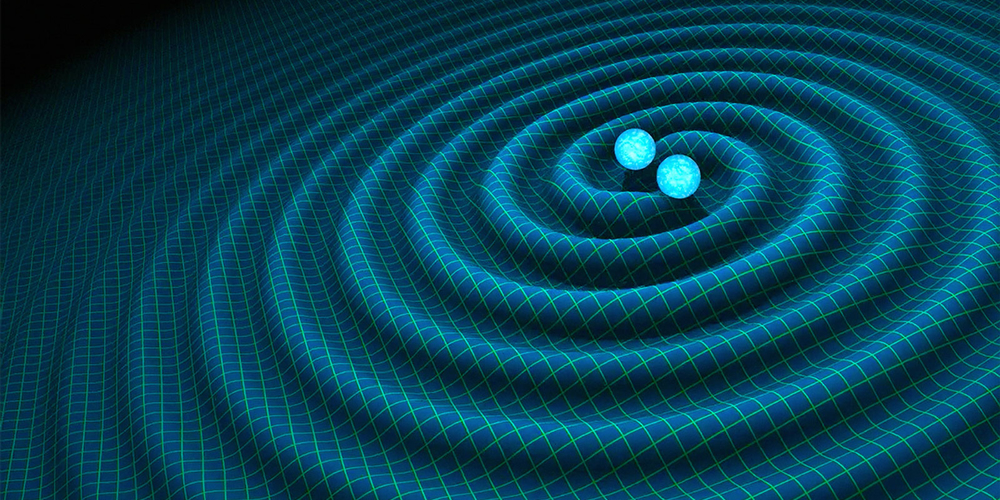

Advanced Concepts in Astrophysics
In this section, we explore more complex astrophysical concepts that deal with extreme phenomena and the limits of our understanding of the universe. Topics include expanding space-time, black holes, light distortion over time, and other advanced phenomena that challenge intuition.
Expanding Space-Time
The universe has been constantly expanding since the Big Bang. Space-time is not static; galaxies move away from each other as the very fabric of the universe stretches. This expansion is described by the Friedmann-Lemaître-Robertson-Walker metric and is related to the cosmological constant, representing dark energy, which accelerates this expansion. Observing the redshift of light from distant galaxies allows us to measure the expansion rate and estimate the age of the universe.
Black Holes
Black holes are regions of space-time where gravity is so intense that nothing, not even light, can escape. They form from the collapse of massive stars or mergers of compact objects. General relativity describes that the mass concentrates in a point called the singularity, surrounded by the event horizon, beyond which there is no return. Black holes warp space-time around them, causing extreme tidal effects and gravitational lensing of light.
Light and Time Distortion
The presence of mass and energy distorts space-time, bending light paths and altering the perception of time. This phenomenon, known as gravitational lensing, can be observed when light from distant stars or galaxies is deflected by massive objects between them and us. Near black holes, time dilation becomes extreme: time passes more slowly for objects close to the singularity compared to distant observers.
Dark Matter and Dark Energy
Dark matter and dark energy are fundamental components of the universe, though not directly observable. Dark matter exerts enough gravity to hold galaxies together, while dark energy drives the accelerated expansion of the cosmos. Both are essential for understanding the structure and evolution of the universe on large scales, connecting basic concepts of gravitation and orbital dynamics to advanced cosmological phenomena.

Gravitational Waves
Gravitational waves are ripples in space-time produced by extremely energetic events, such as mergers of black holes or neutron stars. First directly detected in 2015, they allow us to study phenomena that emit no light, providing information on mass, energy, and dynamics of distant systems. Gravitational waves represent the most direct connection between general relativity theory and practical observations in modern astrophysics.
